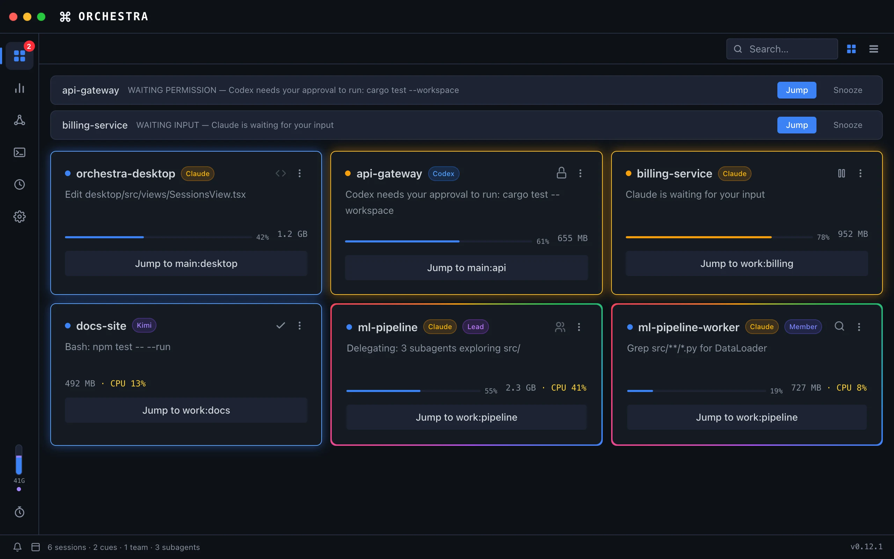
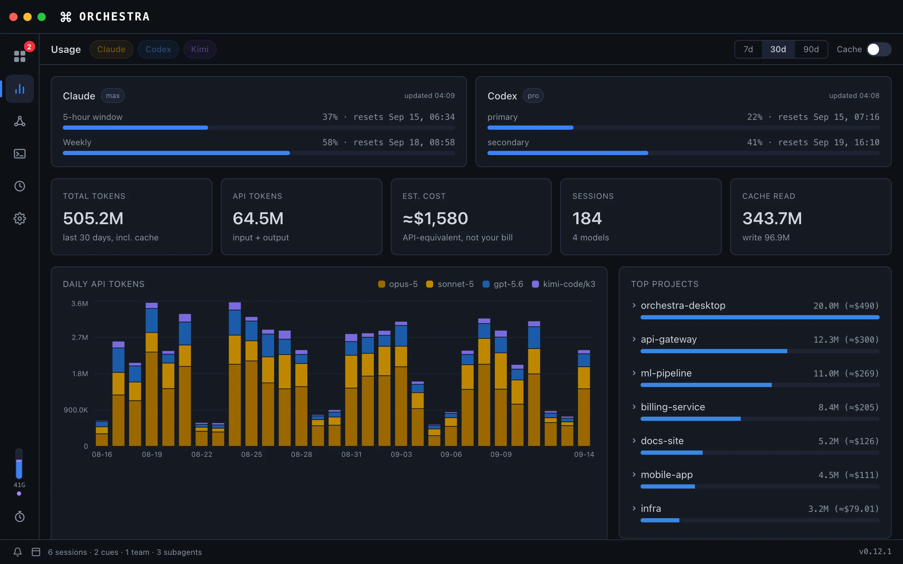
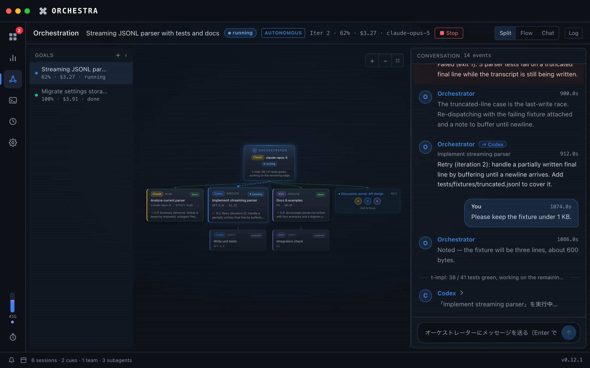
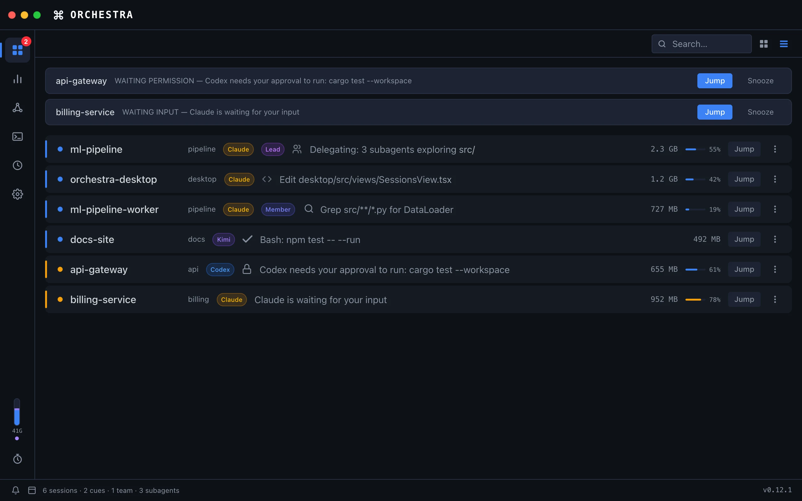
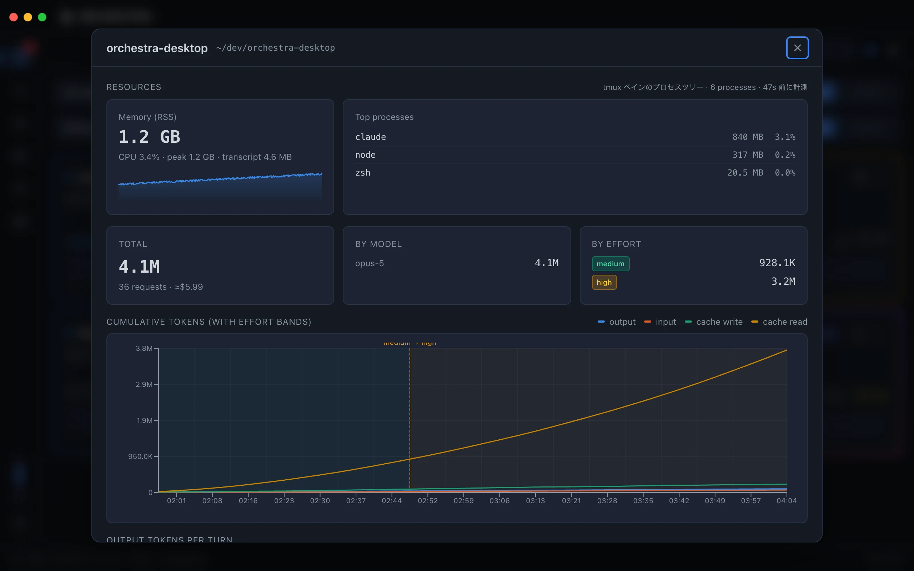
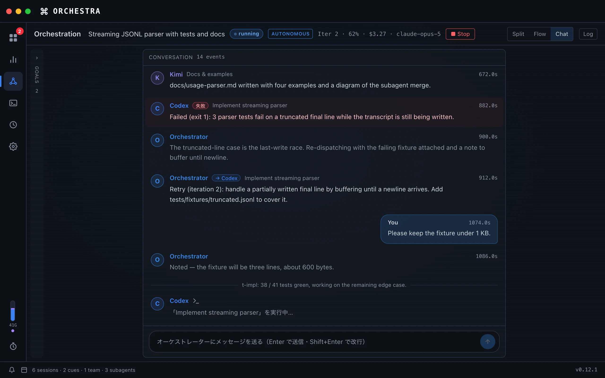
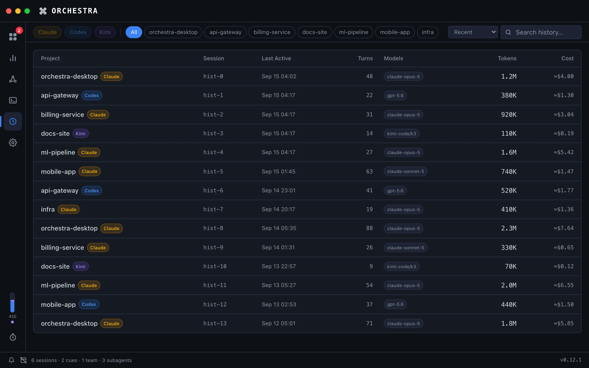

Real-time sessions
Every session is a card: status, one of 11 activity types, the last tool call, context-window usage, memory and CPU. Grid or list, grouped by tmux session, searchable.
Orchestra watches every Claude Code, Codex and Kimi session on your Mac, cues you the moment one needs a decision, and jumps you to the right terminal. Then it goes further: hand it a goal, and an orchestrator runs the agents for you.
brew install --cask zeroshotlog/tap/orchestra

Every agent CLI already has a hook system. Orchestra plugs into it with one setup script, listens on localhost, and turns the stream of events into a dashboard you can actually act on.
13 Claude Code events, 10 for Codex, 12 for Kimi: tool use, permission requests, subagent starts, compaction, session end.
Events land in an in-memory store, become session state, cues and usage. Nothing is written anywhere but your disk.
A macOS notification with sound, a cue in the dashboard, and a Jump button that selects the exact tmux window and focuses your terminal.
Built for people who run three, six, ten agents at once and refuse to babysit terminals.
Every session is a card: status, one of 11 activity types, the last tool call, context-window usage, memory and CPU. Grid or list, grouped by tmux session, searchable.
Permission prompts, waiting input, errors and stale sessions become cues with a macOS notification. Snooze, hide or remove them.
Cards know which tmux window and pane the agent lives in, even when several agents share a directory. One click selects it and focuses your terminal.
Daily tokens per model and project with USD estimates across Claude Code, Codex and Kimi. Rate-limit gauges for the 5-hour and weekly windows, and per-session charts of how context size drives per-turn cost.

Agent Teams are detected automatically. Leads get the rainbow border, members a softer one, and every card counts its running subagents.
Machine-wide memory in the sidebar, RSS and CPU per session, and a warning cue for agents left idle for hours while holding gigabytes.
Claude Code, Codex and Kimi side by side with their own badges. Ollama models appear as $0 workers when the app is running.
Open tmux workspaces in tiled terminal panes inside Orchestra, create or rename workspaces, and jump straight into a session's pane.
An orchestrator built on the Claude Agent SDK plans the work, dispatches tasks to Claude Code, Codex and Kimi workers, checks their results and iterates until the goal is met.





127.0.0.1:3008, it never sends data externally, and there is no telemetry. Session data, prompts and working directories stay on your disk.~/.claude/settings.json. As Claude Code works, it posts events (tool use, completion, permission requests, subagent activity) to Orchestra's local server, which turns them into the dashboard, cues and notifications. The statusline adds per-session effort, context usage and rate limits.~/.orchestra/engine on first use (dependencies install once, a few tens of seconds). Workers are the CLIs you already have: Claude Code, Codex, Kimi Code CLI, or local models via Ollama.xattr -cr /Applications/Orchestra.app once. Homebrew installs skip this step.Free for macOS on Apple Silicon. Install, run one setup script, and every new agent session shows up.
brew install --cask zeroshotlog/tap/orchestra
brew install --cask zeroshotlog/tap/orchestra./scripts/setup-claude-hooks.shclaude · codex · kimi